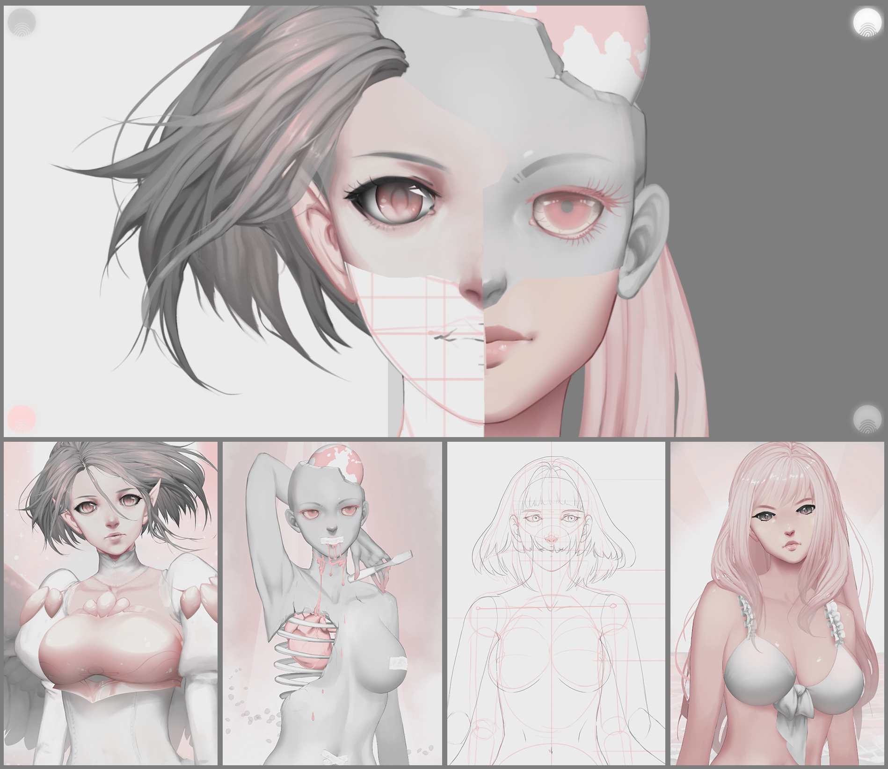
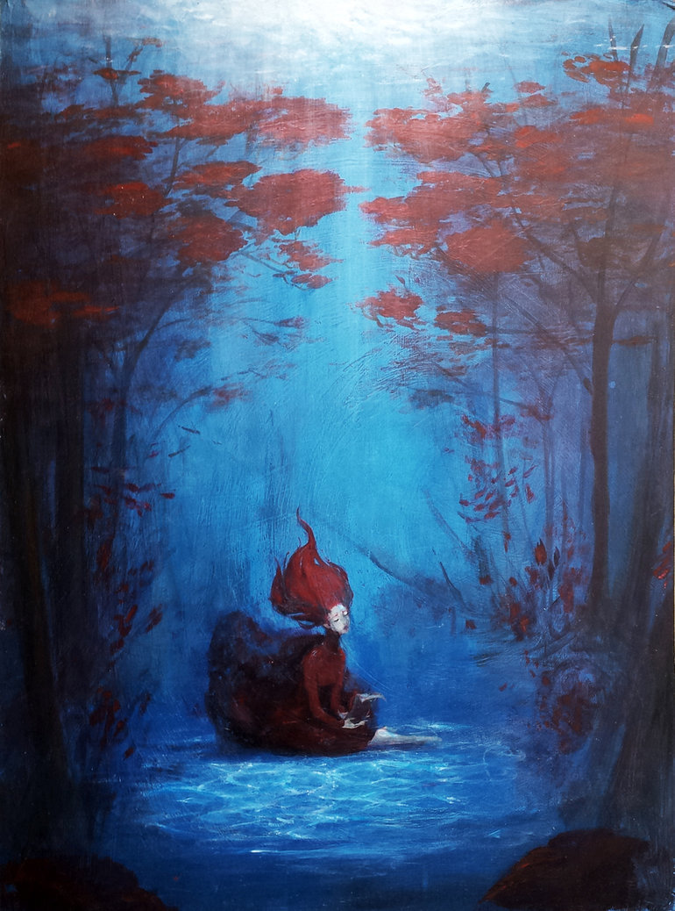

Photoshop, Live2D
I came up with this project as my final for ART 75. I’d seen Live2D used in some mobile games, and I thought it would be neat to learn, so I wanted to make a project around it. I did this through pretty traditional brainstorming, just writing out ideas on paper of what was on my mind. After a lot of time struggling with what direction to even take it, I decided to use my indecision as the basis for the project. I always feel like I’m being pulled between the art that I should do, the art that I’m expected to do, art that sells, and art that I need to do in order to get better, so I painted a picture for each division and designed the project to blend all four in the piece as a whole and learned to use Live2D in order to do the animation. I think that this project sums up my approach to art. I try to make something with a broad appeal but that also appeals to me, almost always with the intent of learning something, and only including crafted social narratives when prompted, like in a school setting.

Website Link
‘Til the Forest Met the Sea
Acrylic on Masonite
This was done while I was going to school in the Midwest. We’d had record rainfall and a lot of flooding. I lived on a river, so you could go by and see the playground equipment and park pavilions along the river almost completely covered in river water. So that was the inspiration for this painting. The narrative is a guardian of the forest who falls in love with the guardian of a body of water. She makes the rain fall until her forest is part of the body of water too.

E--
Photoshop
This is a drawing of my character in the mmorpg FFXIV. I just wanted to draw her for fun and to practice incorporating some painting techniques. I like to do at least one drawing of my character from any game I play that has customization, so I guess it was less inspiration and more an inevitability.